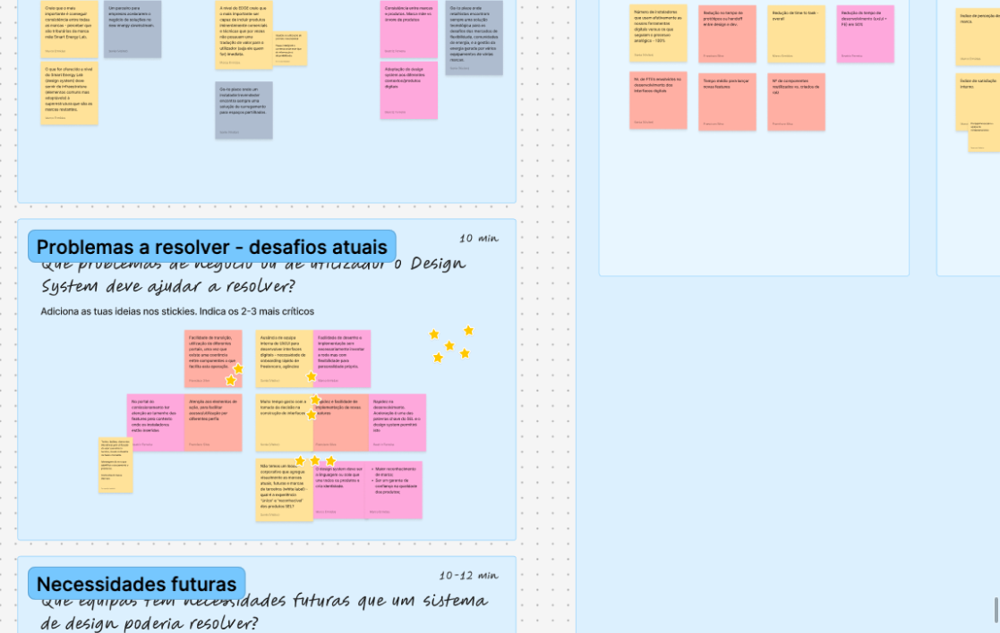
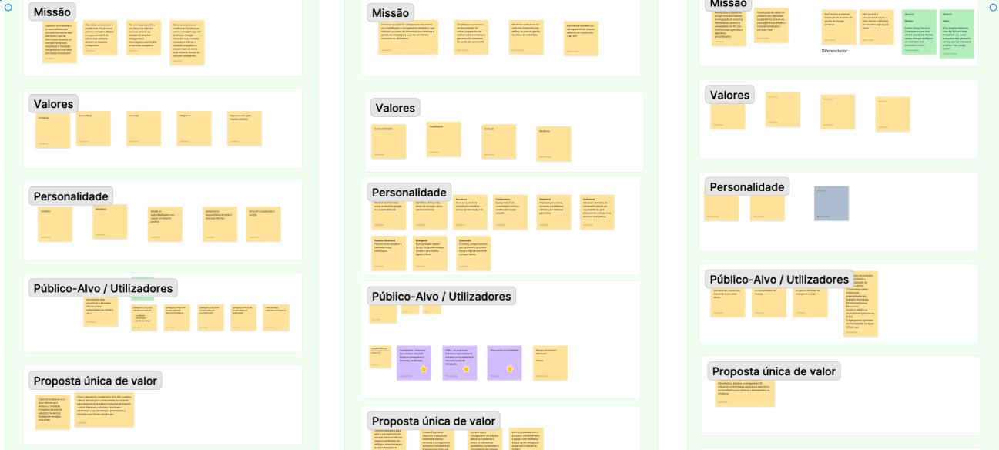
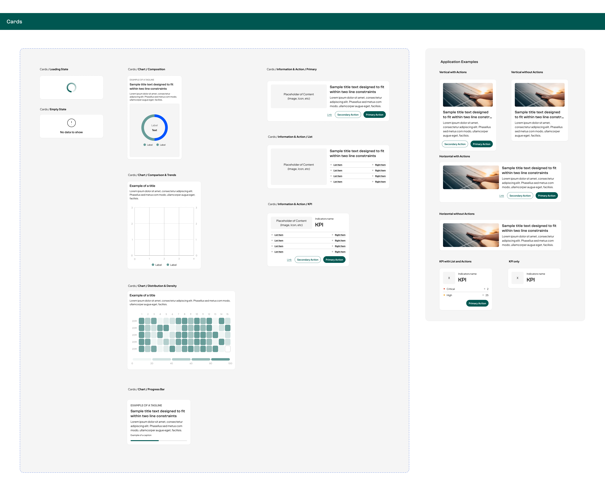
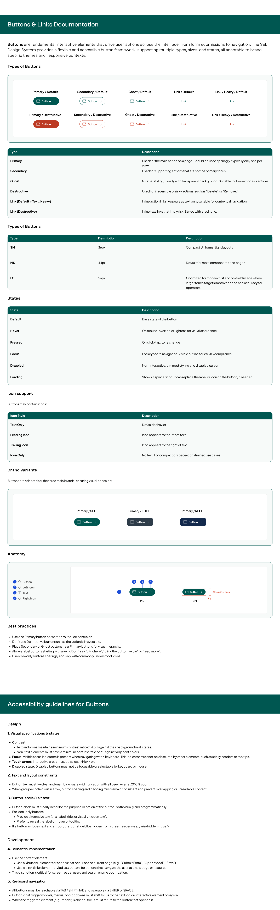

Energy Sector
Design System
Multi-brand
Challenge
An energy company had a parent brand and two sub-brands with very distinct visual identities and no shared DNA. There was no consistency and no natural connection back to the root brand.
The client's goal was clear: maintain the distinction between the three brands, while making any of them instantly recognisable as part of the same family.
-
Three brands with no shared visual DNA
-
No tokens with inheritance between brands
-
Duplicated components with no shared reference system
-
No defined or documented accessibility criteria


My Role
- Strategic alignment workshops (2 sessions)
- Brand audit and design audit across all three brands
- Benchmarking design systems in the energy sector
- Building the multi-brand design system from scratch
- Defining foundations: colour, typography, spacing, grid, effects and logos
- Component documentation with best practices and per-component accessibility guidelines
Discovery &
Research
Two structured workshops with the client before any system decisions:
-
Strategy and alignment
Vision, success criteria, technical feasibility of multi-branding, needs identification and immediate action plan.
-
Identity and requirements
Deep dive into each brand's identity, context analysis and needs validation to inform design system creation.
Complemented by three audits:
- Brand audit across all three brands
- Design audit of each brand's existing websites
- Benchmarking 3 design systems in the energy sector



Design Decisions
Tokens organised in three layers: global (base values), alias (semantic mapping) and component (specific use). The parent brand defines the foundations; sub-brands inherit and override only what is necessary.
Foundations built from scratch for all three brands:
- Colour
- Typography
- Spacing
- Grid and breakpoints
- Effects
- Logos
Outcome & Impact
- Coherent multi-brand design system with 3-layer token inheritance
- Three distinct brands, instantly recognisable as a family
- Zero duplicated components: inheritance guaranteed by tokens
- Complete documentation with best practices and per-component accessibility criteria
- A single reference system for all three brands, eliminating ad-hoc component decisions during development